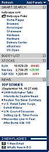
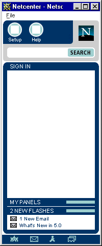
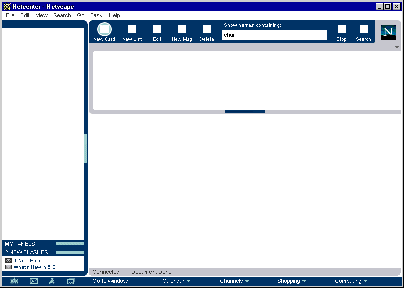

| Seamonkey |
UI仕様
|
|
Seamonkeyのためのユーザ体験(UE)構成 ニュースグループへフィードバックを投稿 |
最終更新:
2001年3月21日(水) 06:30:26
|
| 著者 German
W. Bauer オリジナルの最初の作成: 1998年1月31日 |
現在の状態: 最終 |
クイックリンク:
Exec概要 |
チーム構成
|
古い仕様は更新されている可能性があります |
Seamonkeyは、この製品においてアプリケーションを通して繰り返されるモジュール化されたユーザ体験構造を取り入れています。 この仕様は、アプリケーションウィンドウの基礎となる部分について書いています。
目標
エンドユーザに、機能グループを探すための共通の場所を与えます。 各コンポーネントのやっていることが簡単にわかるようなプラットフォームUIを構築します。 エンドユーザがアプリケーションを移るとき使用法の知識にテコ入れできるように、 レイアウト構成をC5プラットフォームのアプリケーションに何も変わることなく適用できるようにする。ターゲットユーザ
この機能のターゲットユーザは、"Product Marketing"に書かれているCommunicator Seamonkeyユーザです。
ユーザ作業
初級 中級 上級 Seamonkeyクライアントプラットフォームで動くアプリのスクリーンレイアウト上で、 コンポーネントとそれらの目的とする機能をすばやく判別する コンポーネントの組み合わせをカスタマイズする(使える状態になっている場合)。たとえばサイドバーをクローズする、ツールバーを折りたたむ。 さらに進んだカスタマイズ(例えば右側にあるサイドバー)
設計概要
デフォルトの組立て

モジュール化され一貫したレイアウト
Seamonkeyプラットフォーム上のアプリケーション全てで一貫したレイアウト
(フルサイズで見るならここをクリック)
{kind=link}
設計詳細
全てのSeamonkeyクライアントアプリケーション(例えばブラウザ)に共通のコンポーネントの概要
| メニュー | |||
| サイドバー |  | ツールバー | |
 |
表示内容 | ||
| ステータスバー | |||
| タスクスイッチャー | |||
アプリケーション縦断プレビュー
| ブラウザ | メール | チャット | アドレス帳 |
|  |  |
{kind=link}
{kind=link}
{kind=link}
{kind=link}
メインメニュー
メニュー構成と拡張方針は、このコンポーネントのUE仕様に記述されています。
アプリケーション特有の中心となるツール
中心となるアプリケーション機能このコンポーネントのUE仕様(アプリケーション特有の):
- ナビゲーター用 (まもなく作成予定)
- メッセンジャー用
タスク/サービススイッチャー
タスクとサービスの切り替えおよび起動このコンポーネントのUE仕様(準備中)
サイドバー
"次の情報へ..."このコンポーネントのUE仕様
Status bar
Seamonkey環境の状況を一目で把握この構成要素のためのユーザ体験(UE)仕様
エラーメッセージとダイアログ
条件 メッセージ ユーザの選択肢
アーカイブされた文書
スペシャルフォーマッティングの例:
改訂
改訂1: 最初の試み(使いやすさのテスト、UI設計文書とFE技術と技術仕様に基づく)
改訂2: C5プラットフォーム(特にメッセンジャー)で全てのアプリを調節する完全な再設計改訂3: 最終設計(Netscape Netcenter設計との共同作業の構成と結果に基づく)
特記事項
|